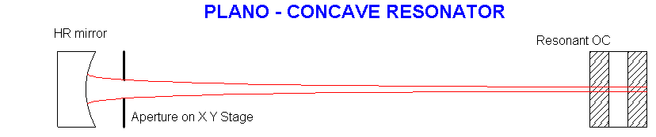
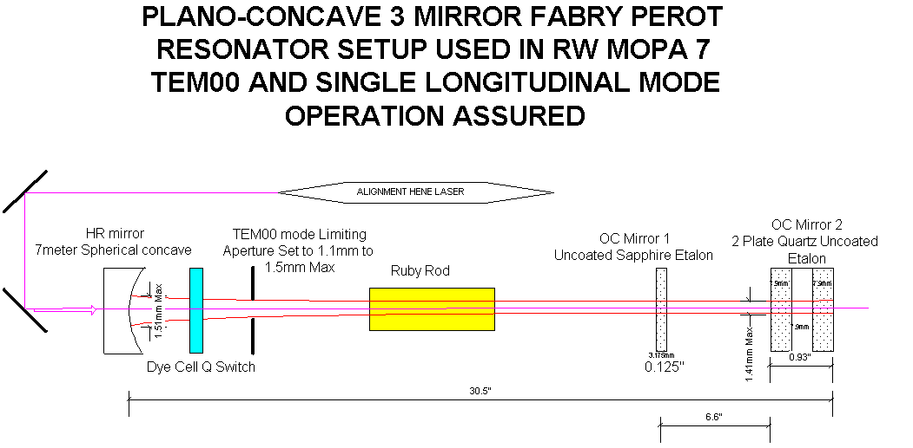
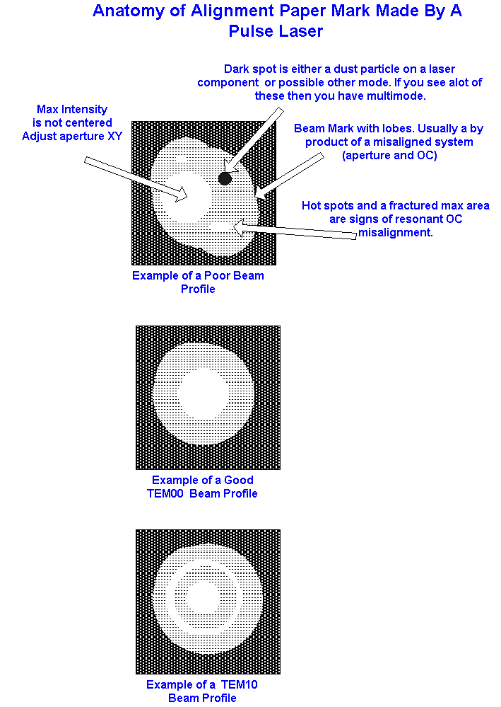

Home Return to Main Page
My method to
align a Plano-Concave Resonator For Good Quality TEM00 mode.

The above
configuration allows good TEM mode selection and the use of resonant etalon
type reflector reduces the number and magnitude of longitudinal modes.
Insertion of additional elements like etalons or staturable absorbers as mode
selectors will further reduce longitudinal modes. The Plano-Concave resonator
is still somewhat sensitive to mis-alignments and a balance of alignment
tolerance vs. mode volume should be considered when deciding on HR mirror focal
length and separation length. Refer to my spreadsheet for these plano-concave
calculations and the contained comment tutorials weights.xls
Setup
Resonator:

Both the three
mirror Fabry Perot and the two mirror FP can be aligned the same way as given
below.
Note: Since the
alignment of the two OC mirrors on version 7 are critical for good spatial beam
quality then this alignment procedure was determined to give the best results
for the ruby laser. Patience is a must as slight adjustments of the OC mirror 1
will generally correct poor tem00 mode due to multiple reflections as long as
OC mirror 2 is correctly aligned with HR.
If using a
sapphire etalon in the three mirror arrangement, then you must confirm that the
sapphire is cut at the zero degree c axis for use in this system (Ruby rods
normally have the c axis at 60 degree relative to the rod axis. Sapphire
etalons could be either 0 or 90 degree orientations with 1-2 arc second
parallel faces. 0 degree will assure minimal double refraction effects. Both
the Ruby rod and the sapphire etalon must be aligned before aligning the
resonator. Follow the same method for both as indicated in the "ALIGN
ROD" procedure.alignrod.htm The sapphire etalon
is aligned when it too is the darkest in the cross polarizers. It is aligned
with one of the polarizers. In the case of the ruby rod we know its orientation
due to its color change but to find out if the sapphire is aligned with the
ruby rod may require testing in the laser setup and observing maximum power
output. Correctly aligned with the ruby rod will allow both sides of the etalon
to cause maximum reflectivity.
1. Setup an
alignment laser like a HENE on the HR side. Remove the HR mirror. Center the
beam at the HR opening and confirm at the OC Mirror 2 that the beam arrives in
the center of that optic as well. Since the beam travels passively through the
dye cell, ruby rod, and OC Mirror 1 then all deviations will be taken into
account. Ruby rod and dye cell was oriented with an offaxis tilt so that any
residual reflections from these components was reflected out of the resonator.
Ruby rod when pumped will create some negative lens effects on the system
during q switch pulse generation but that effect is usually not critical in the
above arrangement.
2. With the
above laser beam geometrically aligned to the centers of both end mirrors and
the HR mirror removed, Close down the diaphragm aperture and center it on the
beam using the XY adjusters for the aperture.
3. Open aperture
and remove Resonant OC mirror 2 (outer OC) so that it's reflections are not
involved. Adjust kinematic mount for OC mirror 1 while observing the back
reflection from OC mirror 1 towards the aperture as it lands on Dye Cell.
Observe Dye Cell glass and center reflection onto arriving beam.
4. Install OC
mirror 2 and adjust while observing the back reflection from OC mirror 2
towards the aperture and dye cell The reflection should be centered into the
beam observed at Dye Cell glass.
5. Place a white
card 45 inches beyond the laser system and secure so it can't move. Observe the
HENE laser beam after it leaves the system as it falls on the card. Confirm
that the laser beam only has one spot if not adjust either OC and watch as the
beam becomes centered. Repeat steps 3 and 4 if you get lost. Steps 3 to 5
confirm that that both OCs are aligned with the laser beam. In Steps 3 and 4
you can use this white card instead of the Dye Cell glass to observe alignment.
6. Tape onto the
card a piece of thermal paper like Kentek's zapit paper. With a straight pin
poke a small hole centered where the HENE laser beam strikes the paper.
Reinstall the HR mirror and observe and just note any lateral displacements of
the HENE beam caused by the HR mirror having a slight wedge.
7. Adjust the HR
while observing the HENE beam at the paper target and eliminate any extra beam
spots if possible by centering these toward the main beam spot. The laser is
roughly aligned.
8. Close down
Aperture to 1.5mm. Fire the laser and observe the spot that lands onto
the thermal paper. If no spot then either increase power supply or adjust HR.
Recommend firing and readjusting just one control on the HR until lasing is
observed. Once this happens then adjust the HR until the desired beam is
centered on the pinhole made. The system is now aligned. Finally adjust the
HENE to be centered on the pinhole as well if the HENE is to be left in place
as a coaxial alignment tool for installation of power amplifiers and other
optics. If at step 7, the HENE is adjusted to be centered again on the
pinhole after the HR was installed, and the HR adjusted to eliminate any
extra beam spots, then it was found that very mininum laser firing and adjustment
would be needed to center the fired beam onto the target pinhole.
9. The output
should show good quality spatial beam, circular without any elongations or
extra beam lobes. The slightest misalignment of the two OCs can cause these
spatial problems and slight adjustment of OC mirror 1 or OC mirror 2 may be
necessary. Suggest using a dial indicator on the kinematic mount with a 0.0001
accuracy to verify repositioning of the OC. The use of a dial indicator will
help you get back to where you started from if you make adjustments and to fix
these issues generally require slight adjustments between the 0.0001 graduation
marks. It is possible to adjust to within 20 microns if needed provided a good
dial indicator and fixture is used. Step 9 is a last ditch effort to
tweak mirror 1 or mirror 2 if necessary to fix a spatial problem. The best
method is by repeating the steps 2 to 8 above. If having trouble you can tyry
removing or adjusting with large tilt the inner OC (mirror 1) during that
firing procedure. Align the OC mirror 2 for best power and TEM00 mode quality.
Then install or adjust mirror 1 to reflect the HENE back to aperture and tweak
until good TEM00 mode returns by eliminating mulitple
reflections.
Below are some
thermal paper illustrations from previous lasers built.
